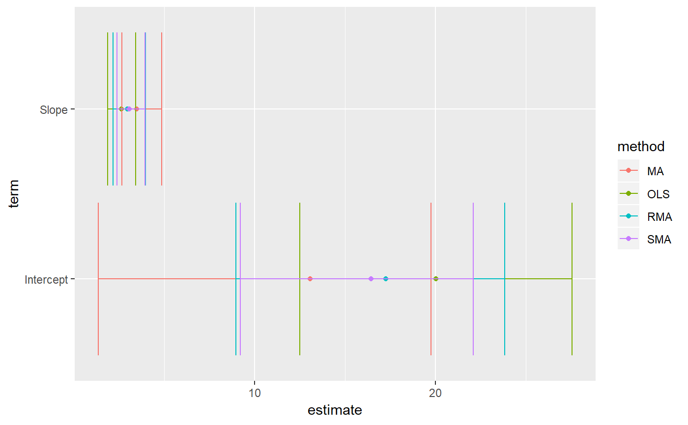

R/lmodel2-tidiers.R
lmodel2_tidiers.RdTidy or glance an lmodel2 object. An lmodel2 represents model II simple linear regression, where both variables in the regression equation are random.
# S3 method for lmodel2 tidy(x, ...) # S3 method for lmodel2 glance(x, ...)
| x | lmodel2 object |
|---|---|
| ... | Extra arguments, not used |
All tidying methods return a data.frame without rownames, whose structure depends on the method chosen.
tidy returns a data frame with one row for each combination
of method (OLS/MA/SMA/RMA) and term (always Intercept/Slope). Its columns
are:
Either OLS/MA/SMA/RMA
Either "Intercept" or "Slope"
Estimated coefficient
Lower bound of 95% confidence interval
Upper bound of 95% confidence interval
glance returns a one-row data frame with columns
OLS R-squared
OLS parametric p-value
Angle between OLS lines lm(y ~ x) and lm(x ~ y)
H statistic for computing confidence interval of major axis slope
Note that unlike linear regression, there are always only two terms in an lmodel2: Intercept and Slope. Furthermore, these are computed by four methods: OLS (ordinary least squares), MA (major axis), SMA (standard major axis), and RMA (ranged major axis). See the lmodel2 documentation for more.
Note that there is no augment method for lmodel2 objects because
lmodel2 does not provide a predict or residuals method
(and since when both observations are random, fitted values and residuals
have a less clear meaning).
if (require("lmodel2", quietly = TRUE)) { data(mod2ex2) Ex2.res <- lmodel2(Prey ~ Predators, data=mod2ex2, "relative", "relative", 99) Ex2.res tidy(Ex2.res) glance(Ex2.res) # this allows coefficient plots with ggplot2 library(ggplot2) ggplot(tidy(Ex2.res), aes(estimate, term, color = method)) + geom_point() + geom_errorbarh(aes(xmin = conf.low, xmax = conf.high)) + geom_errorbarh(aes(xmin = conf.low, xmax = conf.high)) }